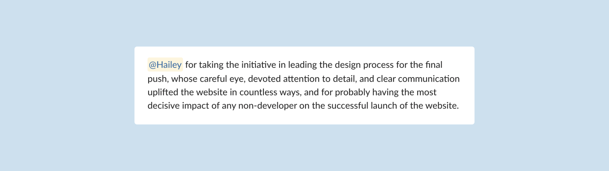

Outcomes
The redesign of the Convex website successfully launched across 300+ pages, ensuring a fully responsive and cohesive user experience across both desktop and mobile. The implementation of the updated design system improved consistency, while also balancing uniqueness and brand alignment within the ServiceTitan ecosystem.
Adaptability
The entire process was neither linear nor straightforward, and it allowed for significant learning opportunities along the way. At times, there were discrepancies between the initial Figma designs and how they turned out in development but we made it work! I constantly had to challenge what I knew, ask questions, and seek support from my teammates. It all helped me gain a better understanding of priorities and collaboration preferences – all of which shaped my perspective as a designer.
Leadership
Prior to the Convex website migration, I have never had the opportunity to lead a project of this scale. While collaborating with other team members, I needed to make immediate calls on design decisions involving approaches, interactions, and visual improvements. I learned more about the website migration process, built trust with team members, and contributed to large-scale impact. As a Junior, it initially took a moment to solidify my role as the main point of contact, but eventually my teammates trusted me to make nearly all of the design decisions. That felt like a big win!
To illustrate the impact of my role, the screenshot below features a snippet of a message my colleague shared while internally announcing the launch of the website:
